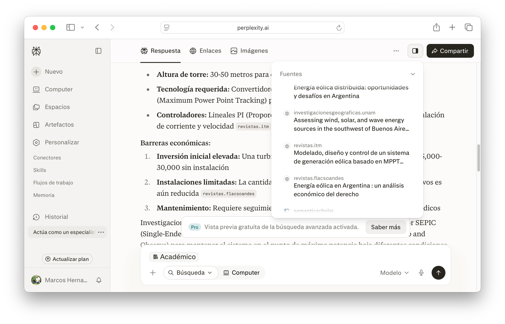
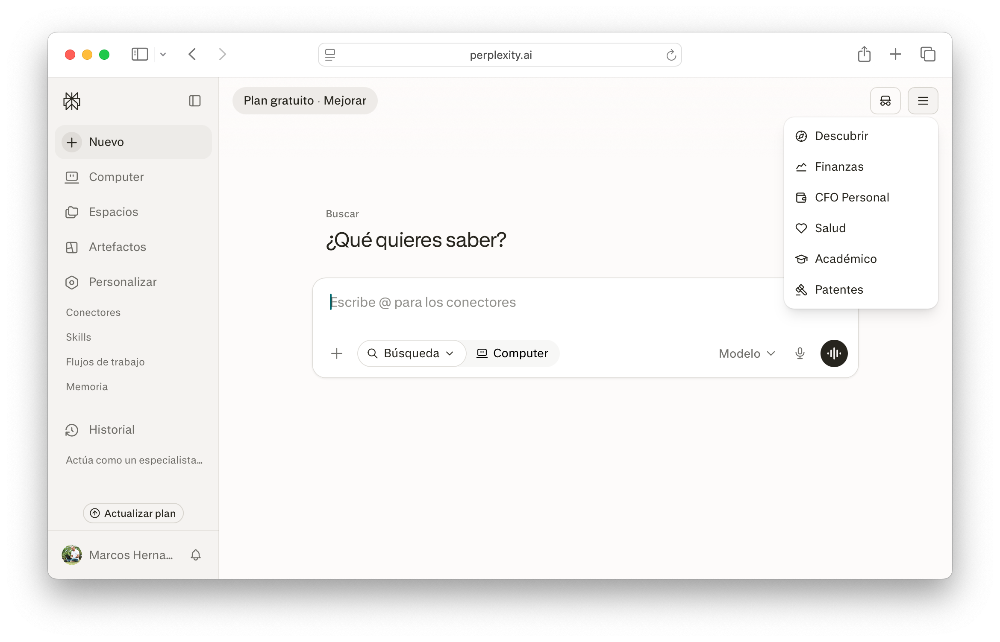
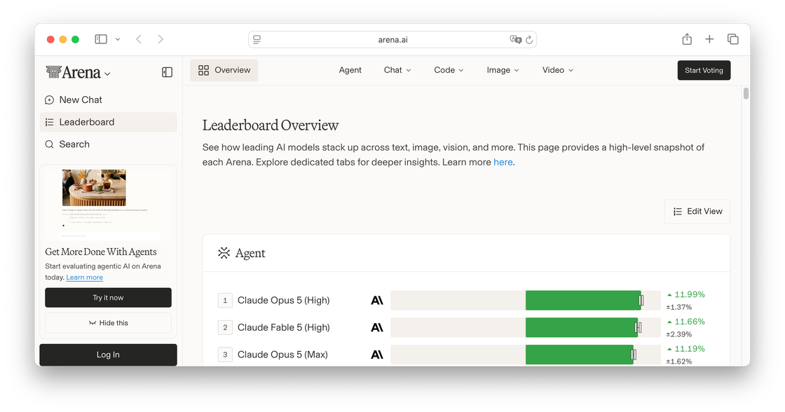

RAG abierto: buscar con respaldo en toda la web (Perplexity)
¿Cómo sabés si una fuente que te dio una IA es real, o si el modelo la inventó?
Recién viste una demo en vivo: un chat de IA genérico armó tres fuentes académicas sobre un tema cualquiera, y al menos una cita no existía o no decía lo que el modelo afirmaba. No fue un accidente, es cómo funciona un LLM genérico. Todo lo que sigue responde a la misma pregunta: cómo buscar con IA sin ese riesgo, y cómo dejar el rastro para que cualquiera pueda verificarlo.
La diferencia que importa
Un LLM genera texto a partir de su entrenamiento: predice qué palabra viene después, basándose en miles de millones de textos que procesó meses o años atrás. No busca, no verifica, no sabe si lo que dice es verdad. Perplexity (perplexity.ai) funciona distinto: busca en internet en tiempo real y cita cada afirmación con la fuente de donde la sacó. Podés hacer clic en el número y verificar.
| ¿De dónde viene la respuesta? | De su entrenamiento (datos de hace meses o años), salvo que la búsqueda web esté activa en esa conversación | De una búsqueda en internet en tiempo real, siempre |
| ¿Cita fuentes? | Depende de si buscó en la web para esa respuesta puntual (y aun con búsqueda activa, no siempre te avisa que la usó | Sí, siempre) número en el texto, link a la fuente real |
| ¿Podés verificar? | Solo cuando muestra de dónde sacó el dato | Sí, un clic lleva a la fuente original |
| Riesgo de alucinación | Alto sin búsqueda activa: puede inventar datos, autores o títulos | Menor, pero no cero: siempre verificá |
| Mejor para | Redactar, resumir, explicar conceptos | Buscar información con respaldo verificable |

El panel de Fuentes, a la derecha de la respuesta: cada afirmación tiene su sitio de origen, con un clic de distancia.
💡 Idea clave: por qué esto no es blanco o negro
ChatGPT y Gemini pueden buscar en la web y citar por su cuenta cuando detectan que la pregunta lo necesita, no es que nunca lo hagan. La diferencia real con Perplexity no es "busca / no busca", es la transparencia: Perplexity siempre te muestra si buscó y de dónde salió cada dato; un LLM genérico puede hacerlo o no según la pregunta, y no siempre queda claro cuál de las dos cosas pasó.
💡 Idea clave
La regla de oro de Perplexity: no cites a Perplexity. Usá Perplexity para encontrar fuentes, hacé clic en cada número y verificá que la fuente diga lo que la IA afirma. El número es el punto de partida, no la cita.
💡 Consejo: Perplexity + Google Scholar
Google Scholar (scholar.google.com) es el índice de referencia universal para artículos académicos. Se usa en combinación con Perplexity: Scholar para explorar qué existe sobre tu tema y encontrar el DOI exacto de un artículo, Perplexity para obtener el resumen verificado y la cita lista para usar. Ninguno reemplaza al otro. El modo Académico de Perplexity (que restringe la búsqueda a revistas científicas) es una función de la versión Pro, con la versión gratuita también obtenés citas verificables, solo que sin ese filtro.

El modo Académico vive en este menú, restringe la búsqueda a revistas científicas, pero es una función de Perplexity Pro.
Prompt chaining: encadenar instrucciones
Un prompt bien construido con RTCFL ya mejora los resultados. El prompt chaining agrega un paso más: usás la respuesta de un prompt como punto de partida del siguiente. En lugar de pedirle todo a la vez, dividís la tarea en pasos.
📙 Paso a paso: Prompt chaining para buscar fuentes académicas
- Construí un prompt RTCFL y pedile a Perplexity: "Buscá 3 fuentes sobre [tu tema]. Dame título, autor, año y un resumen de 2 líneas de cada una."
- Evaluá las fuentes con CRAAP. Descartá las que no pasen.
- Con las que quedan, pedile: "A partir de estas fuentes, escribí una introducción de 150 palabras sobre [tu tema] con lenguaje académico."
- Copiá el resultado a tu documento con
Ctrl+Shift+V(Mac:⌘+Shift+V). - Verificá cada cita: hacé clic en el número → abrís la fuente → confirmás que dice lo que Perplexity afirma.
Perplexity en acción
- Abrí
perplexity.aien una pestaña nueva. Si ya llegaste al límite diario gratuito, usáscholar.google.com+ verificación manual con CRAAP en su lugar, ninguna herramienta es la única vía para buscar con respaldo. - Construí un prompt RTCFL sobre tu tema (el mismo de tu Documento Base). Pedile 3 fuentes con resumen.
- Evaluá las 3 fuentes con CRAAP. Anotá qué criterio usaste para cada una.
- Hacé clic en al menos 2 números de cita (o, si usaste Google Scholar, abrí al menos 2 artículos) y verificá que la fuente exista y diga lo que se afirma.
- Abrí
Documento Base - V01y posicioná el cursor al final del documento, después de todo el contenido que ya tenías. - Escribí "Fuentes y Citas" y aplicá Encabezado 1. Debajo, copiá las 2 fuentes verificadas con
Ctrl+Shift+V(Mac:⌘+Shift+V). - Volvé al índice que insertaste en la Clase 02 (primera página) → clic en el ícono de actualizar. "Fuentes y Citas" tiene que aparecer como entrada nueva, sin escribirla a mano.
 Actualizá tu LinkedIn
Actualizá tu LinkedIn
Dos aptitudes concretas en una sola actividad: Encadenamiento de Prompts (dividir una tarea compleja en pasos, usando la respuesta de un prompt como contexto del siguiente) y Búsqueda Académica (evaluar fuentes con CRAAP y usar Perplexity/Google Scholar para encontrar artículos con DOI verificable).
Ya tenés fuentes verificadas, no inventadas. El siguiente paso es citarlas de forma que cualquiera pueda rastrearlas hasta el original, verificar no alcanza si no dejás el rastro para que otra persona también pueda hacerlo. Las normas APA tienen cientos de variantes. Acá van los cuatro casos que vas a usar el 90% de las veces como estudiante universitario, más dos conceptos que aparecen en cualquier trabajo académico: la cita en el cuerpo del texto y las notas al pie.
💡 Idea clave
Citar tiene una sola función: darle crédito al autor y permitirle al lector verificar. Todo APA deriva de eso. Si entendés el principio, podés buscar el formato exacto cuando lo necesitás.
Derechos de autor: por qué esto no es solo prolijidad
Todo lo que alguien escribe, graba o publica (un libro, un artículo, una página, un video) tiene derechos de autor desde el momento en que se crea, sin necesidad de ningún trámite. Usar las ideas o las palabras de otra persona sin decir de dónde salen se llama plagio, y no es un detalle de forma: es presentar como propio el trabajo intelectual de alguien más.
⚠️ Advertencia: consecuencias reales
En la universidad, el plagio puede significar la desaprobación directa del trabajo y, según el reglamento de cada institución, sanciones disciplinarias más serias. Es más fácil de detectar de lo que parece: la mayoría de las cátedras cruza los trabajos con herramientas antiplagio. Fuera de la facultad, en un texto publicado profesionalmente, plagiar puede derivar en un reclamo legal del autor original. Copiar una respuesta de una IA sin verificar si repite, sin atribución, el contenido de una fuente identificable tampoco te exime, la responsabilidad de citar bien es tuya, no de la herramienta.
Citar bien, entonces, cumple dos funciones a la vez: separa tu aporte del de otros, y deja que cualquiera pueda rastrear una afirmación hasta el original, la misma lógica que ya usaste con Perplexity.
💡 Idea clave: APA no es solo para "letras"
APA 7 es el estándar más usado en ciencias sociales, humanidades, comunicación, educación y psicología, pero en esta cursada se usa como convención única para todas las carreras, más allá de que tu campo use otro estilo más adelante (IEEE en ingeniería, Vancouver en ciencias de la salud, por ejemplo). El DOI, en particular, es más frecuente en artículos de ciencias exactas y salud; en humanidades y ciencias sociales muchos artículos no tienen DOI y se cita con la URL directamente, no es un error tuyo si no lo encontrás.
Los 4 casos esenciales
| Tipo de fuente | Formato APA | Ejemplo |
|---|---|---|
| Libro | Apellido, I. (Año). Título en cursiva. Editorial. | Castells, M. (2009). Comunicación y poder. Alianza. |
| Artículo o página web | Apellido, I. (Año, día mes). Título. Nombre del sitio. URL | Ministerio de Educación. (2024, 15 mar.). Informe anual. educacion.gob.ar/... |
| Video (YouTube u otra plataforma) | Canal. (Año, día mes). Título del video [Video]. Plataforma. URL | UNQ. (2025, 10 jun.). Inteligencia artificial en la universidad [Video]. YouTube. https://... |
| Salida de IA | Empresa. (Año). Nombre del modelo (fecha) [Large language model]. URL | OpenAI. (2025). ChatGPT (mayo 2025) [Large language model]. https://chatgpt.com |
La cita en el cuerpo del texto
La bibliografía al final del documento lista las fuentes. Pero dentro de cada párrafo, cada vez que usás una idea de otra persona, tenés que indicarlo. Eso es la cita en el texto.
| Tipo de cita en el texto | Cuándo usarla | Ejemplo |
|---|---|---|
| Cita indirecta (paráfrasis): (Apellido, año) | Cuando tomás una idea pero la reescribís con tus palabras. | La IA predice texto en lugar de comprenderlo (Castells, 2009). |
| Cita directa (textual): (Apellido, año, p. XX) | Cuando copiás las palabras exactas del autor. Usala poco. | La IA "no busca, no verifica, no razona: predice" (Hernández, 2026, p. 7). |
| Autor mencionado en el texto, Autor (año) | Cuando el nombre del autor forma parte de la oración. | Según Castells (2009), el poder se ejerce a través de redes. |
⚠️ Advertencia
La cita directa (textual) se usa poco. Si buena parte de tu texto son comillas, no estás analizando la fuente, la estás recortando. Preferí la paráfrasis con cita (Apellido, año) y reservá la cita textual para frases que realmente necesitan citarse palabra por palabra.
DOI: dato adicional
El DOI (Digital Object Identifier) es un identificador permanente para artículos de revistas científicas. Si buscás en bases académicas y el artículo tiene DOI, lo ponés al final de la cita en lugar de la URL: https://doi.org/10.xxxx/xxxxxxx. Si no ves un DOI, usás la URL normal, en humanidades, sociales y comunicación muchos artículos no tienen DOI.
Notas al pie
La nota al pie es información complementaria que no encaja en el cuerpo del texto sin interrumpir el argumento: una aclaración, una referencia secundaria, un dato de contexto. No reemplaza a la cita APA, si citás una fuente, va en el texto con (Apellido, año) y en la bibliografía al final. La nota al pie es para todo lo demás.
📙 Paso a paso: Insertar una nota al pie en Google Docs
- Posicioná el cursor donde querés el número de referencia.
- Insertar → Elementos de página → Nota a pie de página (atajo:
Ctrl+Alt+F, Mac:⌘+Opción+F). - El cursor salta al pie de la página. Escribí el texto de la nota.
APA en tu documento
- Tomá las 2 fuentes verificadas de la Actividad 1.
- Identificá qué tipo de fuente es cada una (libro, web, video o IA).
- Debajo de "Fuentes y Citas", agregá un subtítulo "Bibliografía" con Encabezado 2 (
Ctrl+Alt+2, Mac:⌘+Opción+2). Ahí escribí la cita APA correcta de cada fuente. - En el párrafo donde usás cada fuente, agregá la cita en el texto con el formato correcto: (Apellido, año).
- Agregá al menos 1 nota al pie en cualquier parte del documento (una aclaración o dato de contexto).
Actualizá tu LinkedIn
Escritura Académica: producir textos con citas APA 7ma edición verificadas (cita en el texto, bibliografía y DOI como enlace) es una aptitud puntual y demostrable con el documento que acabás de armar.
RAG cerrado: trabajar con tus propias fuentes (Gemini Notebook)
Ya resolviste la trampa buscando con respaldo en toda la web. Acá el problema es el mismo, que la IA no invente la fuente, pero el corpus es distinto: en vez de salir a buscar, trabajás solo con documentos que vos elegiste.
La diferencia con Perplexity
Perplexity y Gemini Notebook (notebook.google.com) se parecieron más desde que Gemini Notebook sumó Discover Sources: un botón en el panel de Fuentes que, a partir de un tema que describís, rastrea la web y te sugiere documentos para sumar al cuaderno. La diferencia que importa no desapareció, solo se corrió: Perplexity te devuelve una respuesta ya redactada, con números de cita que llevan a la web abierta, en el momento; Gemini Notebook nunca responde "a partir de la web" directamente, todo lo que Discover Sources encuentra entra primero como fuente al cuaderno, y recién ahí la IA puede usarlo, siempre citando el pasaje exacto de esa fuente. Uno te da una respuesta; el otro te ayuda a construir un corpus propio y después responde solo con eso. Son herramientas complementarias, no alternativas.
| ¿De dónde viene la respuesta? | Internet en tiempo real | Solo de las fuentes del cuaderno (Discover Sources puede sumar fuentes nuevas, pero primero las importa, no responde "al vuelo") |
| ¿Para qué se usa? | Obtener una respuesta ya redactada, con la web como respaldo | Construir un corpus propio (tuyo o sugerido) y trabajarlo en profundidad |
| ¿Cita fuentes? | Sí, links a páginas web | Sí, párrafo exacto de tu documento |
| ¿Podés verificar? | Sí, clic al número lleva a la web | Sí, clic al chip lleva al pasaje exacto |
| El resultado es... | Una respuesta | Una fuente que queda en tu cuaderno, más una respuesta anclada en ella |
| Costo | Gratis con límites diarios · Perplexity Pro (pago) suma más búsquedas y el modo Académico | Gratis con cuenta Google, con límites generosos de cuadernos y fuentes · Gemini Notebook Plus (dentro de Google One AI Premium o Workspace) suma más cupo, no funciones nuevas para este uso |
Por qué funciona así: RAG en dos líneas
Gemini Notebook usa una arquitectura llamada RAG (Retrieval-Augmented Generation). La lógica es simple: cuando le hacés una pregunta, el sistema no improvisa desde su entrenamiento. Primero busca en tus documentos los fragmentos más relevantes, los junta con tu pregunta y recién entonces genera la respuesta, usando solo esa información.
💡 Idea clave
La analogía del examen: un LLM genérico trabaja a libro cerrado, depende de lo que "recuerda" del entrenamiento. Gemini Notebook trabaja a libro abierto: tiene tus documentos frente a los ojos y los consulta antes de responder.
⚠️ Advertencia
Gemini Notebook reduce drásticamente las alucinaciones al anclar cada respuesta en tus documentos, pero no las elimina al 100%. Si el documento está mal escaneado, si la pregunta es ambigua o si la fuente tiene errores, la IA puede interpretar mal. Siempre hacé clic en el chip de cita y verificá el pasaje original.
El cuaderno como espacio de trabajo
Gemini Notebook no es un chat. Es un espacio de trabajo donde combinás múltiples fuentes en un solo cuaderno y las interrogás juntas. Podés cargar:
- PDFs (apuntes, artículos, libros)
- Google Docs
- URLs de páginas web
- Videos de YouTube (transcribe el audio)
- Texto copiado y pegado
🔎 Para explorar: Discover Sources
En el panel de Fuentes, botón "Discover" (o "Descubrir"): describí tu tema en una frase y Gemini Notebook te devuelve hasta 10 documentos recomendados, cada uno con un resumen de por qué es relevante. Sumá el que te sirva con un clic, pasa a ser una fuente más de tu cuaderno, con el mismo tratamiento que un PDF que subís vos.
El flujo de trabajo es simple: cargás las fuentes, le hacés preguntas ancladas en ellas, y desde el panel Studio generás material de estudio a partir de ese mismo corpus: resúmenes, guías de estudio o un Resumen de Audio (un pódcast generado a partir de tus fuentes). Todo lo que genera Studio sigue anclado en las fuentes que cargaste, no en el entrenamiento general del modelo.
💡 Idea clave: por qué conviene para estudiar, no solo para citar
Gemini Notebook sirve más allá de este trabajo puntual. Cargá ahí el programa de la materia, los apuntes de clase o la bibliografía obligatoria de cualquier cursada, y usalo para repasar: preguntale por un tema puntual y te contesta solo con lo que realmente dieron en esa materia (no con una versión genérica de internet que puede no coincidir con el enfoque de tu profesor), pedile una guía de estudio con los conceptos clave, o generá un Resumen de Audio para escuchar en el viaje al lugar de estudio. La ventaja frente a preguntarle lo mismo a un LLM genérico es siempre la misma: la respuesta está anclada en tus fuentes, no en un promedio de internet.
🔎 Para explorar
Abrí notebook.google.com. Creá un cuaderno nuevo. Subí el PDF del programa analítico de la materia (o cualquier documento que tengas a mano). Preguntale: "¿Cuáles son los temas principales?". Hacé clic en el chip de cita de una respuesta y verificá el pasaje en el documento original. Después generá un Resumen de Audio en formato Resumen.
Tu cuaderno en Gemini Notebook
- Abrí
notebook.google.comy creá un cuaderno nuevo. - Subí las 2 fuentes verificadas de la Actividad 1 (PDF, URL o Google Doc).
- Hacé una pregunta al cuaderno sobre tu tema. Verificá la respuesta haciendo clic en el chip de cita.
- Copiá 2 ideas clave a la sección "Fuentes y Citas" de tu
Documento Base - V01, conCtrl+Shift+V(Mac:⌘+Shift+V). Cada idea con su cita (Apellido, año) en el texto. - Generá un Resumen de Audio en formato Resumen, en español. Escuchá 2 minutos. Anotá una cosa correcta y una que te llame la atención.
- Archivo → Historial de versiones → Asignar nombre a la versión actual. Nombrala
Entrega Clase 03.
Ya viste dos arquitecturas distintas para el mismo problema, que la IA no invente la fuente, según de dónde sale la información: toda la web (RAG abierto, Perplexity) o solo tus documentos (RAG cerrado, Gemini Notebook). Para cerrar, un dato rápido: ninguna de las dos herramientas es "la mejor IA" en términos absolutos, eso también se puede medir.
Elegir el modelo adecuado: Arena Leaderboard
Google, OpenAI, Anthropic y otras empresas lanzan modelos nuevos cada pocos meses, y cada uno es mejor en algunas tareas y peor en otras, no hay un modelo que gane siempre. Arena (arena.ai/leaderboard, antes LMArena o Chatbot Arena) es un sitio independiente donde cualquiera compara dos respuestas de IA a ciegas y vota cuál es mejor; con millones de votos arma un ranking tipo Elo, separado por categoría de tarea. No hace falta cuenta para consultarlo.

La pestaña Text → Overall es el ranking general, más abajo están las categorías específicas (Document, Search, WebDev) que importan más a la hora de elegir herramienta según la tarea.
| Si tu tarea es... | Mirá la categoría... |
|---|---|
| Redactar, resumir, explicar un tema | Text |
| Analizar un PDF, un apunte o un paper largo | Document |
| Buscar información actual con fuentes verificables (como hoy) | Search |
| Generar o corregir código | WebDev |
💡 Idea clave
El ranking cambia cada pocas semanas, no memorices "el modelo número 1", aprendé a volver acá y mirar la categoría que te sirve. Y elegir el modelo adecuado no reemplaza verificar lo que dice: un modelo mejor rankeado igual puede alucinar. El trabajo de verificar (CRAAP, clic en la fuente, chequear la cita) sigue siendo tuyo, como en todo lo de hoy.
🔎 Para explorar
Abrí arena.ai/leaderboard, entrá a la categoría Search y anotá qué modelo lidera en este momento. Compará ese resultado con la categoría Document: ¿es el mismo modelo?
Usaste dos arquitecturas distintas hoy para una misma investigación, y ahora tenés un criterio para elegir la próxima vez: no "cuál es la mejor IA", sino "cuál es la mejor para esta tarea puntual".
Resumen de la clase
Al principio de la clase planteamos el objetivo: distinguir cuándo una IA busca con respaldo verificable y cuándo solo predice texto, para aplicar ese criterio al citar con rigor académico.
Actividades
Referencia rápida
"frase": frase exacta-excluir: excluye un términosite:: dentro de un dominiofiletype:: por tipo de archivo2020..2026: rango de añosClaude · Copilot
Kimi
https://doi.org/10.xxxx/... al final de la cita, si existeCtrl+Alt+F (Mac ⌘+Opción+F): no reemplaza la cita APAdocs.new: lienzo en blanco al instanteCtrl+Shift+V (Mac ⌘+Shift+V): pegar sin formato, nunca directo de afueraCtrl+Alt+M (Mac ⌘+Opción+M): comentarioCtrl+Z (Mac ⌘+Z): deshacerCtrl+Alt+1: Encabezado 1Ctrl+Alt+2: Encabezado 2Ctrl+Alt+0: Texto normalGlosario
Respuesta de una IA que suena convincente pero es incorrecta o fabricada. Más frecuente en LLMs genéricos; reducida en Gemini Notebook gracias al anclaje en fuentes.
American Psychological Association. Sistema de citación académica. Versión actual: APA 7 (2020), que incluye el formato para citar salidas de IA.
Ranking de modelos de IA por votos humanos a ciegas, con puntaje Elo separado por categoría de tarea (Text, Document, Search, WebDev, entre otras). Antes conocido como LMArena o Chatbot Arena.
Mención breve de la fuente dentro del párrafo: (Apellido, año) para paráfrasis, (Apellido, año, p. XX) para cita textual.
Reproducción exacta de las palabras del autor, entre comillas, con número de página. Se usa poco: la paráfrasis con cita es lo que se espera.
Función de Gemini Notebook que sugiere documentos nuevos a partir de un tema descrito. Los documentos se suman al cuaderno como fuente antes de poder usarse, no genera una respuesta directa desde la web.
Digital Object Identifier. Identificador permanente de artículos de revistas científicas. Va al final de la cita APA en lugar de la URL cuando está disponible.
Información complementaria al pie de la página: aclaraciones, referencias secundarias, datos de contexto. No reemplaza a la cita APA.
Herramienta de Google basada en RAG cerrado. Responde solo con las fuentes de tu cuaderno, incluidas las que sumaste con Discover Sources.
Usar ideas o palabras de otra persona sin citar la fuente. Tiene derechos de autor automáticos desde su creación, sin necesidad de registro.
Motor de búsqueda con IA basado en RAG abierto: busca en internet en tiempo real y cita cada afirmación con la fuente. El resultado es una respuesta con links verificables.
Técnica de encadenar prompts: la respuesta de uno se usa como punto de partida del siguiente. Sirve para tareas complejas que no se resuelven bien con una sola instrucción.
Retrieval-Augmented Generation. La IA primero recupera fragmentos relevantes antes de generar la respuesta, en vez de improvisar desde su entrenamiento. RAG abierto recupera de toda la web (Perplexity); RAG cerrado recupera solo de los documentos que vos cargaste (Gemini Notebook).
Fuentes
- Arena (Arena Intelligence). Leaderboard.
arena.ai/leaderboard - APA Style, American Psychological Association. How to cite ChatGPT.
apastyle.apa.org/blog/how-to-cite-chatgpt - APA Style, American Psychological Association. AI references, Reference examples.
apastyle.apa.org/style-grammar-guidelines/references/examples/ai-references - Google. Add or discover new sources for your notebook. Gemini Notebook Help.
support.google.com/notebooklm/answer/16215270